01 / 10 February
A February break in Portugal
Our Lisbon trip ran from 10 to 14 February 2024. We flew with TAP Air Portugal from London Heathrow to Lisbon on Saturday 10 February. Our outbound flight, TP1357, was booked for 18:30–21:15, giving the holiday an evening start.
Before flying, we booked Heathrow Long Stay Parking for Terminals 2 & 3, with Terminal 2 selected for our journey. The parking covered 10–14 February, leaving us time around the outbound and return flights.
We had pre-booked our airport transfer through Booking.com, with a meet-and-greet in the arrivals hall and a journey of around 7.5 km to Campo Grande. Our base was MASA Hotel & Spa Campo Grande Collection, where we stayed for four nights, from 10 to 14 February.
Campo Grande 56, Alvalade, Lisbon, 1700-093, Portugal.
Standard Double Room.
This was a city break with several different views: colourful buildings beyond the window, patterned paving underfoot and the interiors of the vehicles that carried us between stops. The journeys themselves became part of the holiday.
02 / 11 February
A world beneath the water
On 11 February, we visited the Oceanário de Lisboa. For a while, our view of Lisbon changed completely. Buildings and roads gave way to deep blue water, rocky shapes and schools of fish moving together through the tank.
A ray gliding close to the glass made one of the photographs I wanted to keep from the trip. Behind it, smaller fish gathered into a bright cloud above the rocks. It was a different kind of window-seat moment: staying in one place while the scene moved around us.
The aquarium gave this short holiday a nature-filled chapter alongside the city sightseeing.
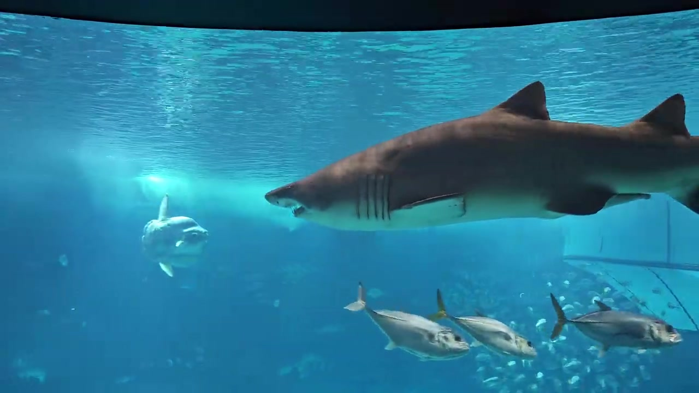
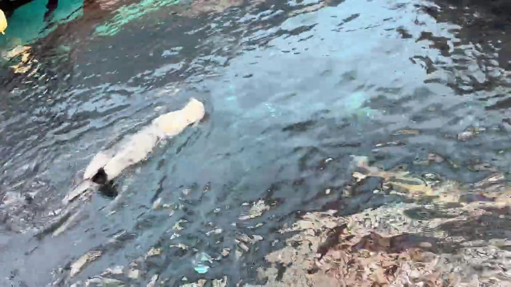
12 February / Beyond the city
A day for Sintra and the coast
For Monday 12 February, we booked the Gray Line Sintra Deluxe day tour. The itinerary brought together Pena Palace and Sintra, followed by Cabo da Roca, Cascais and Estoril—a day set aside for the palaces and coastal scenery beyond Lisbon.
Our booking was for the English-language tour, departing from Marquês de Pombal Square. Keeping Lisbon as our overnight base let us plan a day outside the city without moving hotels.
03 / 12 February
Lisbon from the bus window
The day also included a bus journey. From inside the bus, we watched Lisbon change from one stretch of road to the next: buildings on the hillsides, green spaces and, later, the long line of stone arches of the Águas Livres Aqueduct.
Our photograph of the aqueduct was taken through the window on the evening of 12 February. The arches stretch across the view beneath a clouded sky, with a little light still breaking through. Reflections from the bus remain in the glass—a small reminder that this was a view caught along the way.
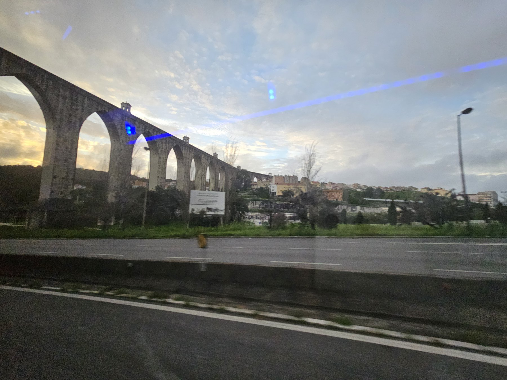
04 / 13 February
A ride on a Lisbon tram
On 13 February, we rode one of Lisbon’s traditional trams. Its wooden interior, narrow aisle and windows gave the journey a different feel from the sightseeing bus.
Between the tram ride and time on the streets, the city’s smaller details came into view: façades, shopfronts and the mosaic-like patterns of the paving. These everyday scenes sit alongside the aquarium and aqueduct in my memories of the trip.
The No. 28 tram is one of Lisbon’s best-known city journeys. Our street and tram-window recordings capture the same traditional yellow-tram character. The route number is not established for every recording, so individual clips keep their original place descriptions.
Trams and funiculars are separate parts of this story: the steep funicular footage is not labelled as Tram 28.
More views from the journey
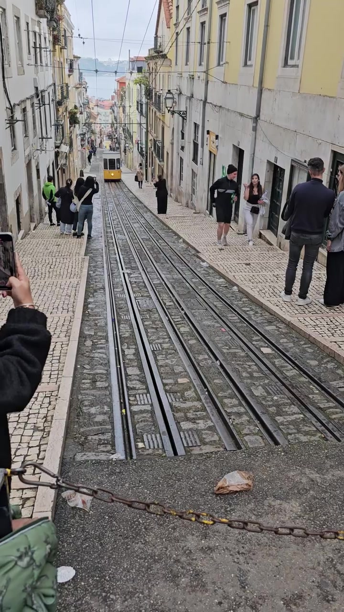
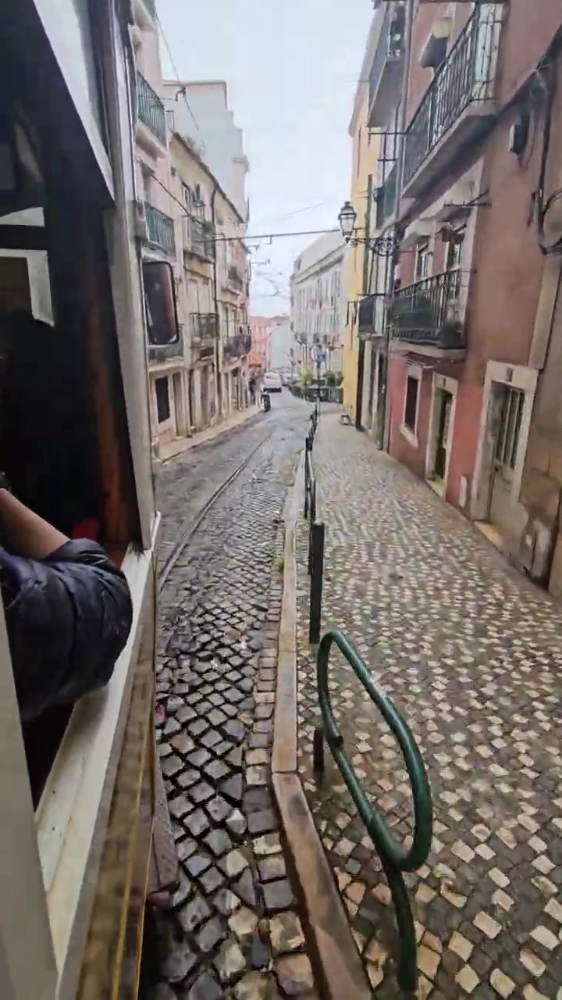
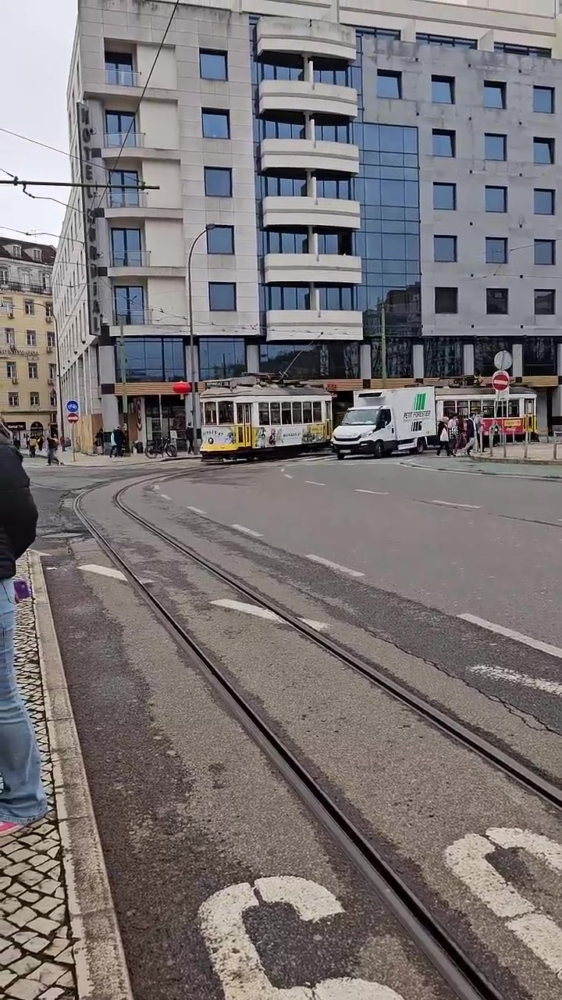
Places along the way
Lisbon in three more views
Beyond the aquarium and aqueduct, these photographs bring back the city itself: Santa Justa Lift lit against the evening sky, São Bento Palace seen during our tram journey, and the rails threading between Lisbon’s colourful buildings.
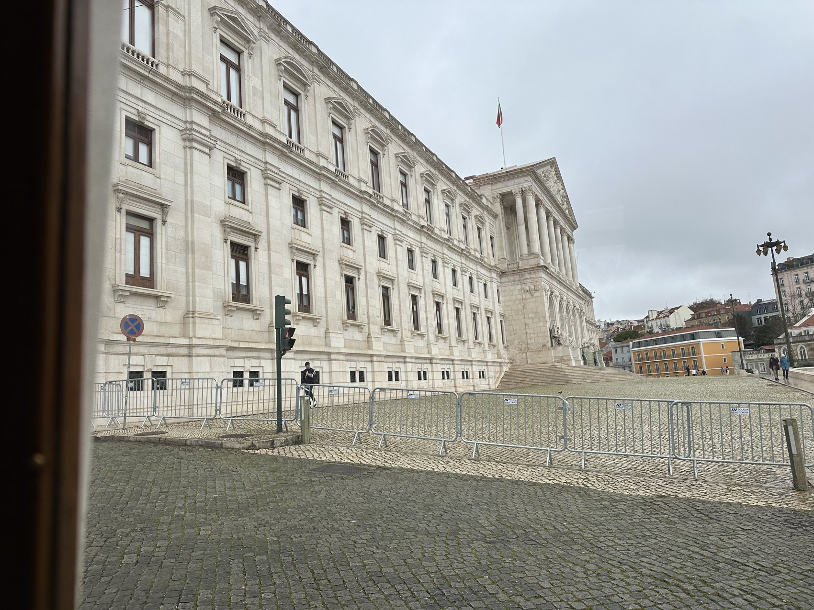
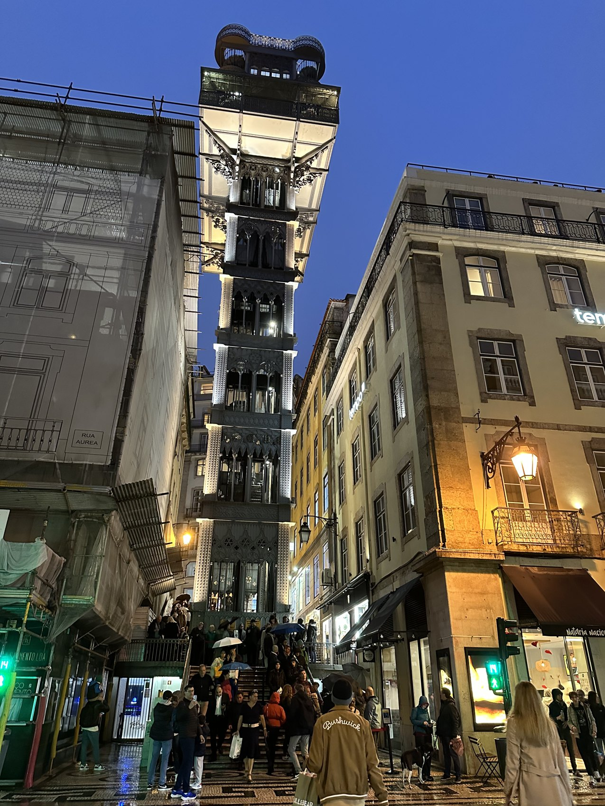
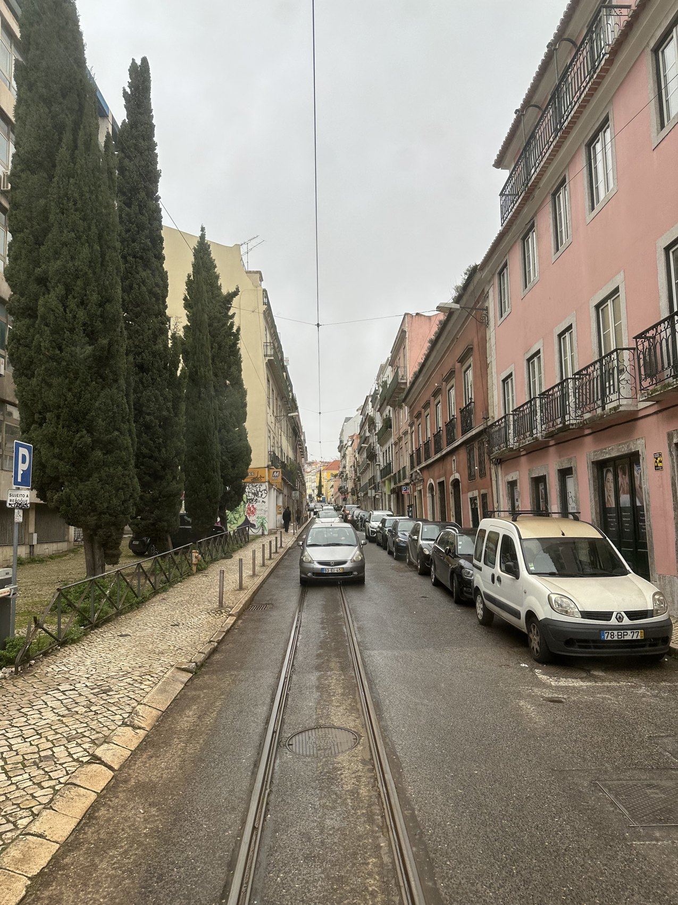
Through the lens
Waterfront views and little discoveries
Our recordings also caught penguins at the Oceanário, the waterfront from the cable car and the steep streets shared with Lisbon’s funiculars.
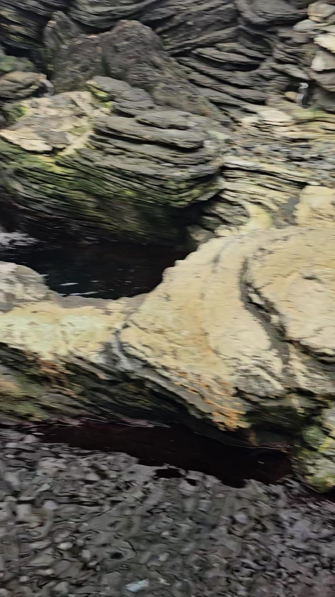
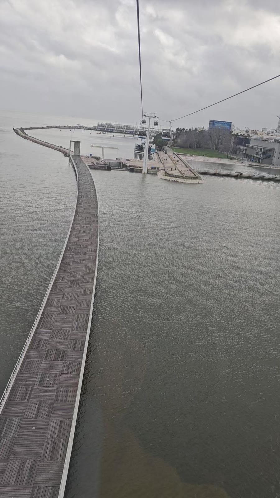
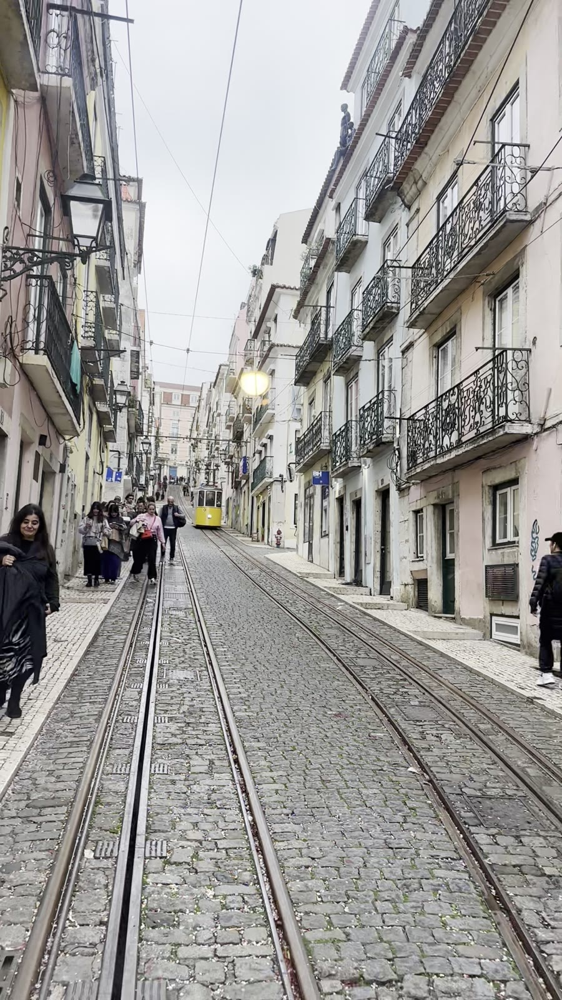
Travel notes
Our flights and four-night stay
We used Lisbon as our base throughout the break, with the same hotel for all four nights. Our flights were with TAP Air Portugal, booked through BudgetAir.
| Date | Journey or stay | Details |
|---|---|---|
| 10–14 February | Heathrow Long Stay Parking | Terminals 2 & 3 · Terminal 2 selected for our journey |
| 10 February 2024 | London Heathrow (LHR) → Lisbon (LIS) | TAP Air Portugal TP1357 · booked 18:30–21:15 |
| 10 February | Lisbon Airport → Campo Grande | Pre-booked Booking.com airport transfer · around 7.5 km · arrivals-hall meet-and-greet |
| 10–14 February | MASA Hotel & Spa Campo Grande Collection | Four nights · Standard Double Room |
| 12 February | Gray Line Sintra Deluxe day tour | Booked route: Pena Palace & Sintra, Cabo da Roca, Cascais & Estoril · English-language tour · departure from Marquês de Pombal Square |
| 14 February 2024 | Lisbon (LIS) → London Heathrow (LHR) | TAP Air Portugal TP1356 · booked 14:40–17:30 |
Flight times shown are the booked local times for our February 2024 trip.
05 / Looking back
The moments we brought home
After checking out on 14 February, our return flight took us from Lisbon back to Heathrow. Looking back, the trip comes together through a few simple scenes: a ray crossing blue water, an aqueduct passing outside the bus and a tram carrying us through Lisbon.
Those are the moments I wanted to share here—the scenery and the journeys that connected our days in Portugal.
Explore more travel stories →Portugal on film · 20 videos
Watch our Lisbon journey
Choose a moment from our 10–14 February 2024 break: airport scenes, tiled streets from the tram, hillside funiculars, marine life and the waterfront. The videos include instrumental music from the YouTube Audio Library, with original background conversations removed.
Airport arrivals
Trams and hillside funiculars
- A yellow tram passing in Lisbon →
- Riding a Lisbon funicular →
- Funicular with a river view →
- Yellow funicular on the hillside →
- Tiled façades from a tram →
- Street life from the tram window →
- Shops from a passing tram →
- A window seat on Lisbon’s tram →
- Patterned pavements from the tram →
- Turning corners by tram →
Oceanário and waterfront
- Oceanário: rays and fish →
- Above the waterfront by cable car →
- Otter at the Oceanário →
- Penguins at the Oceanário →
- Schools of fish →
- Rays gliding through the aquarium →
- Lisbon highlights: penguins, cable car and funicular →